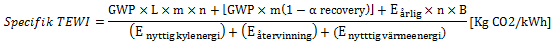
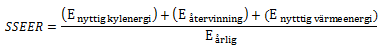

Cálculo TEWI
Cálculo de TEWI, TEWI específico y SSEER (índice de eficiencia energética del sistema estacional)
El cálculo de TEWI en su definición original no tiene en cuenta la energía reciclada y utilizada, que son factores muy importantes en los sistemas de refrigeración y bombas de calor. En la fórmula dada a continuación paraTEWI Específico,, estas cantidades de energía también se tienen en cuenta y se obtiene una cifra de bondad en kg CO2/kWh para la unidad o sistema en cuestión, a lo largo de su vida económica. Esta cifra de bondad se puede utilizar para comparar diferentes instalaciones o soluciones de sistemas, de uno mismo o de diferentes proveedores. .
SSEER: Muchos fabricantes de unidades han desarrollado hoy una eficiencia anual (SPF = Factor de rendimiento estacional) para sus unidades en la aplicación prevista y en determinadas condiciones. A esto hay que añadir el consumo energético de los equipos periféricos (bombas, ventiladores, equipos de control, etc.) que requiere el sistema. Si no se conoce este consumo, se puede estimar en el 17% del consumo energético de la unidad.
El factor TEWI específico se calcula mediante la siguiente ecuación:

La eficiencia anual del sistema se calcula mediante la siguiente ecuación:
